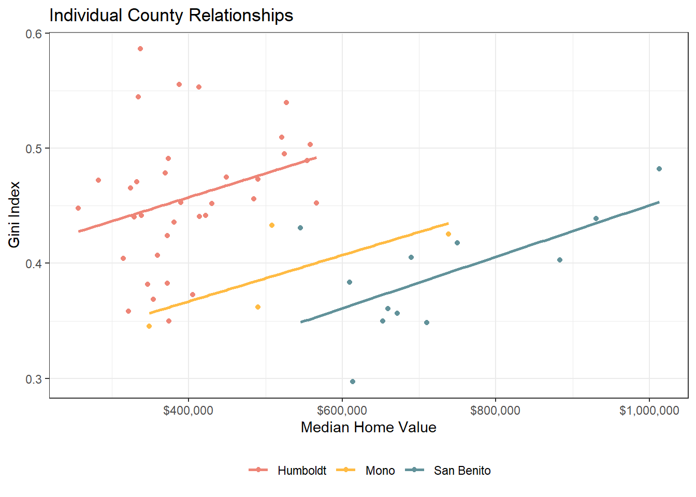
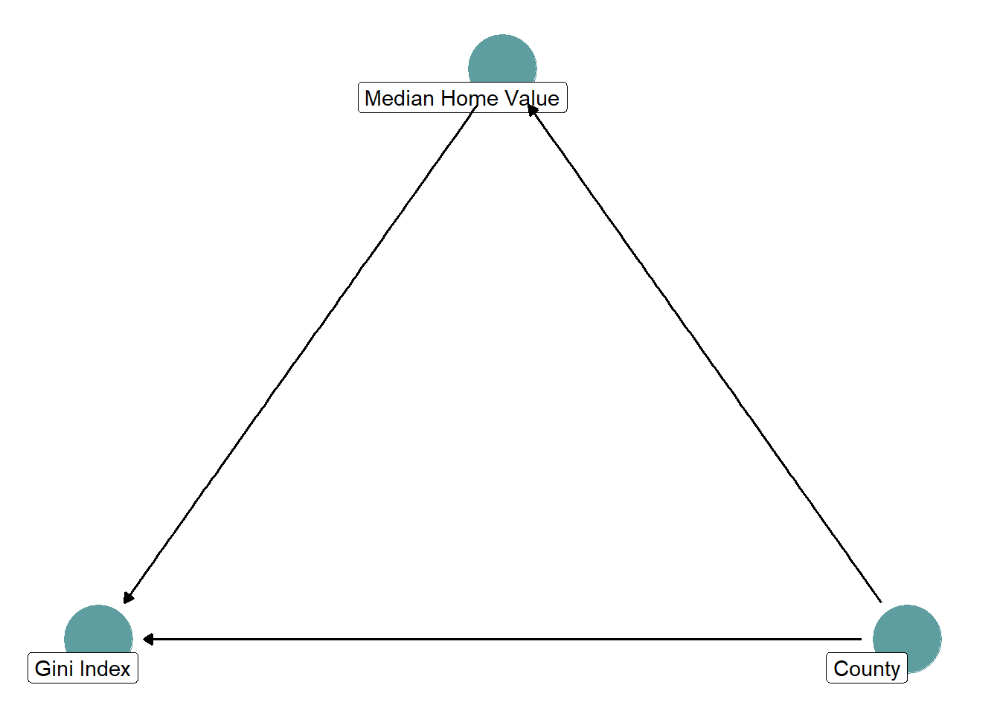

Packages Used
pacman::p_load(
"tidyverse",
"tidycensus",
"brms",
"broom",
"MetBrewer"
)pacman::p_load(
"tidyverse",
"tidycensus",
"brms",
"broom",
"MetBrewer"
)Loading and cleaning California tract data from the 5-year ACS.
get_ca_tracts_acs <- function(year_val) {
acs_year <- get_acs(
geography = "tract",
variables = c("gini_index" = "B19083_001",
"median_home_val" = "B25077_001"),
state = "CA",
year = year_val,
survey = "acs5",
output = "wide",
keep_geo_vars = TRUE
) |>
mutate(NAME = str_remove(NAME, " County; California"),
NAME = str_remove(NAME, "^.*?;\\s*"),
NAME = str_remove(NAME, " County, California"),
NAME = str_remove(NAME, "^.*?,\\s*")) |>
select(county = NAME, GEOID,
gini_index = gini_indexE, median_home_val = median_home_valE)
return(acs_year)
}
ca_tracts <- get_ca_tracts_acs(2022)Calculating county-level Gini Index averages from tracts. The Gini Index is a measure of income inequality in a region. Lower values = less inequality, higher values = more inequality.
raw_avgs <- ca_tracts |>
summarise(estimate = mean(gini_index, na.rm = TRUE),
conf.low = NA,
conf.high = NA,
.by = county) |>
mutate(method = "County Average")Calculating the statewide average.
statewide_avg <- mean(ca_tracts$gini_index, na.rm = TRUE)We can also find county-level Gini Index averages using “fixed effects” in a linear regression.
fe_model <- lm(
gini_index ~ 0 + county,
data = ca_tracts
)
fe_ests <- tidy(fe_model, conf.int = TRUE) |>
mutate(county = str_remove(term, "county"),
county = forcats::fct_reorder(county, estimate),
method = "Fixed Effects Model") |>
select(method, county, estimate, conf.low, conf.high)rbind(fe_ests, raw_avgs) |>
ggplot(aes(x = estimate, y = county, color = method)) +
geom_pointrange(aes(xmin = conf.low, xmax = conf.high)) +
geom_vline(xintercept = statewide_avg, linetype = "dashed") +
labs(y = "", x = "Gini Index Estimate") +
scale_color_manual(values = c(met.brewer("Isfahan1")[1],
met.brewer("Isfahan1")[2])) +
facet_wrap(~method, nrow = 1) +
theme_bw() +
theme(legend.position = "none")
Building a county-level multilevel model is similar to using county-level fixed effects. But Bayesian multilevel models allow information to be shared between counties when estimating what a county’s likely Gini Index is. This acts to shrink estimates from small, noisy counties towards the statewide mean.
multilevel_model <- brm(
gini_index ~ 1 + (1 | county),
data = ca_tracts,
cores = 4,
chains = 4,
threads = threading(2),
backend = "cmdstanr",
silent = 2
)
multilevel_ests <- coef(multilevel_model)$county |>
as_tibble(rownames = "county") |>
mutate(method = "Multilevel Model") |>
select(method, county, estimate = Estimate.Intercept,
conf.low = Q2.5.Intercept, conf.high = Q97.5.Intercept)rbind(fe_ests, multilevel_ests) |>
ggplot(aes(x = estimate, y = county, color = method)) +
geom_pointrange(aes(xmin = conf.low, xmax = conf.high)) +
geom_vline(xintercept = statewide_avg, linetype = "dashed") +
scale_color_manual(values = c(met.brewer("Isfahan1")[2],
met.brewer("Isfahan1")[6])) +
labs(y = "", x = "Gini Index Estimate") +
theme_bw() +
facet_wrap(~ method) +
theme(legend.position = "bottom", legend.title = element_blank())